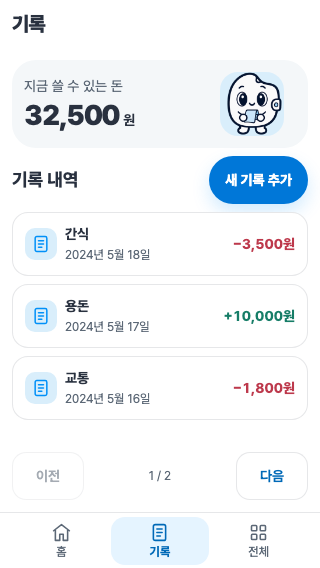
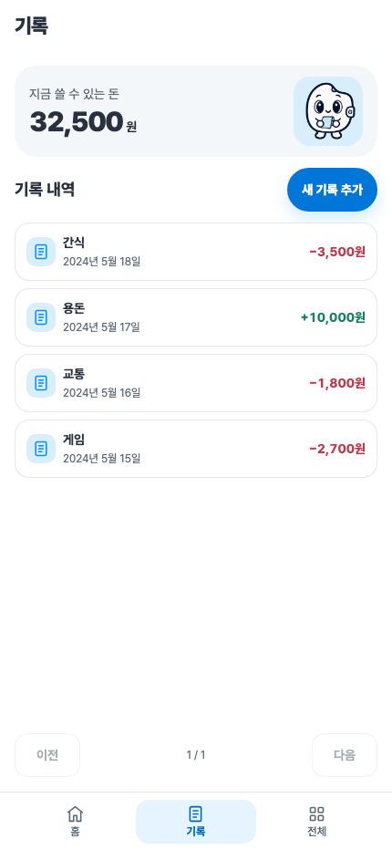
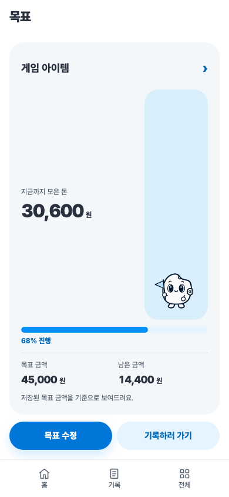
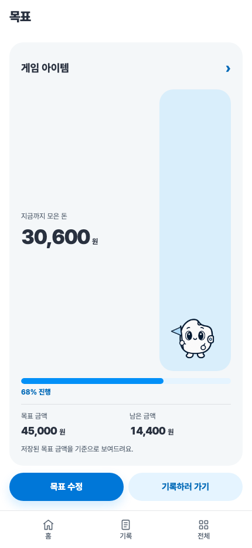
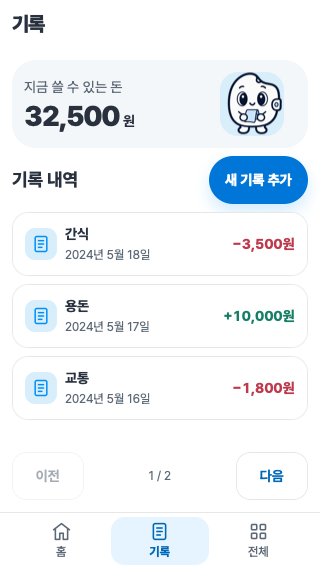
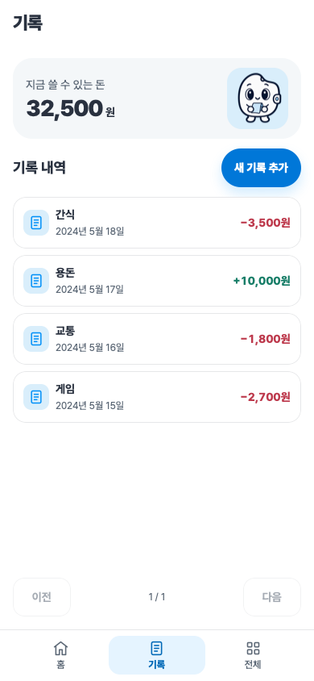

PocketWON 단일 화면 검증
Chromium·WebKit · 392개 검사 PASS · 380개 화면 경계 검사 · 페이지 오류 0건
스크린샷은 독립된 테스트 컨텍스트의 합성 저장 데이터입니다. 일반 모션은 등장 효과가 끝난 상태를 촬영했습니다. 실제 모바일 키보드는 검증하지 않았으며 VisualViewport로 입력 공간을 검사했습니다.
전체 검사 결과 · 구조·보존 보고서 · 실행 앱
chromium · 기록
320×568 · 일반 모션
320×568 · reduced-motion 390×844 · 일반 모션390×844 · reduced-motion
390×844 · 일반 모션390×844 · reduced-motion 430×932 · 일반 모션
430×932 · 일반 모션
430×932 · reduced-motion
chromium · 목표
320×568 · 일반 모션 320×568 · reduced-motion390×844 · 일반 모션
320×568 · reduced-motion390×844 · 일반 모션 390×844 · reduced-motion
390×844 · reduced-motion
430×932 · 일반 모션 430×932 · reduced-motion
430×932 · reduced-motion
webkit · 기록
320×568 · 일반 모션
320×568 · reduced-motion390×844 · 일반 모션390×844 · reduced-motion
430×932 · 일반 모션430×932 · reduced-motion 검증 실행: run-2026-10-03T09-35-08-376Z